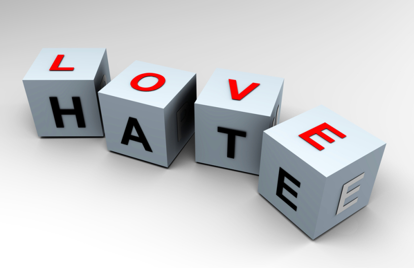

 The “third wind” is something I experience while playing sports. I think most of us at least know that a “second wind” refers to finding a burst of energy again, after you’ve already keeled over and questioned your own mortality.You might not actually move faster or jump higher or do anything
better at all, but you definitely feel better like you’re young again. But, inevitably, that vat of energy dissipates as well. The “third wind,” then, is when I enter a state where my body is accustomed to being tired. I feel like I can move at that speed forever. I think “Yes, this is the new normal.” quite a sinking feeling when your team loses — if it’s a 60 minute game, then you’ve been braced for that reality for at least the past thirty minutes. It is more of a hunger, where you yearn to dive right back into it so that it might eventually carve out a different ending for you.